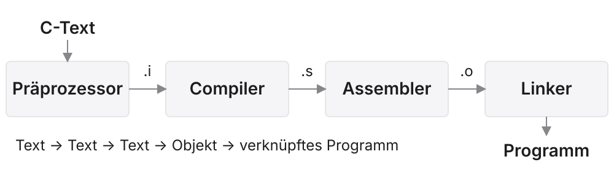
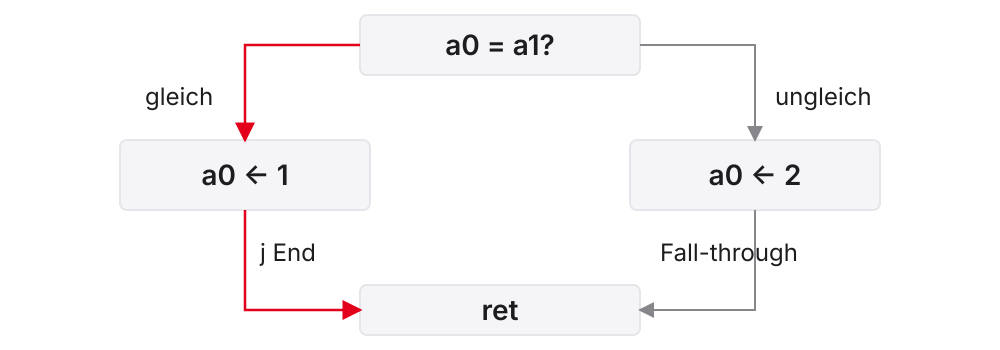
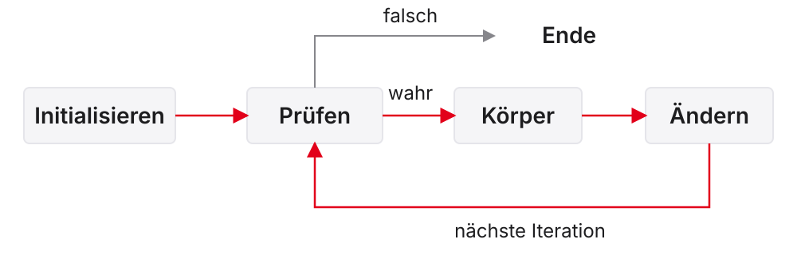
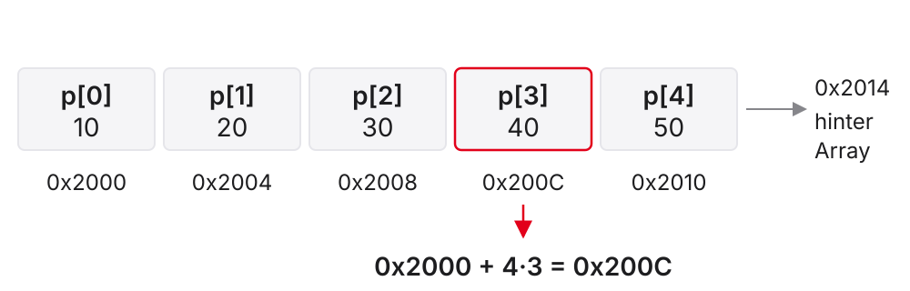
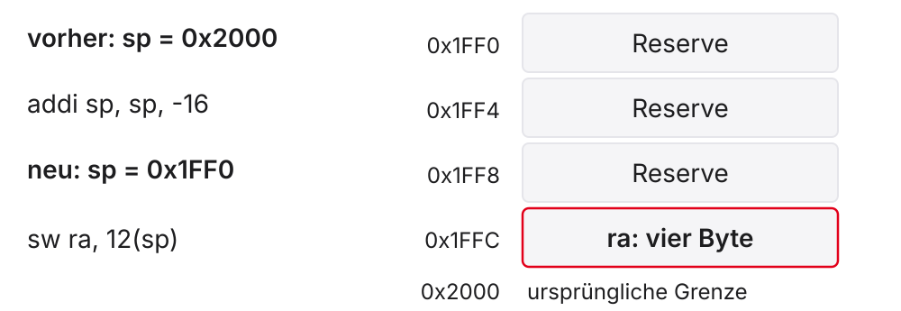
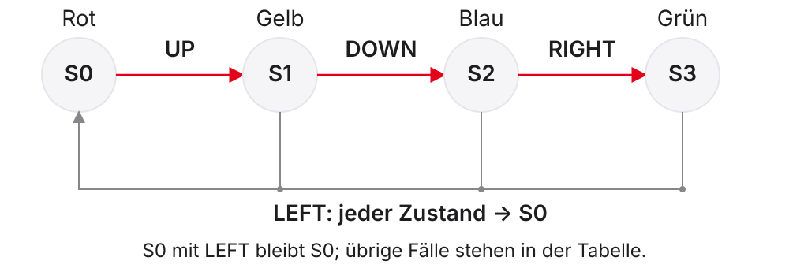
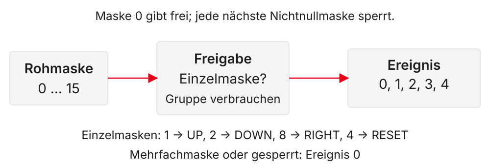
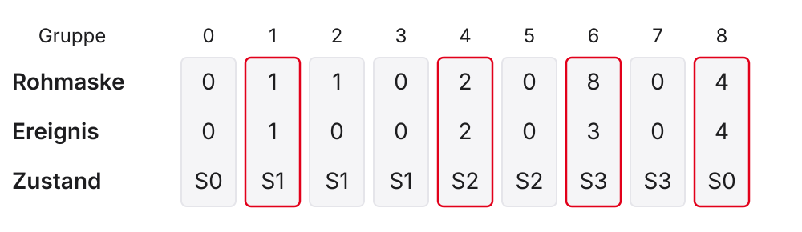
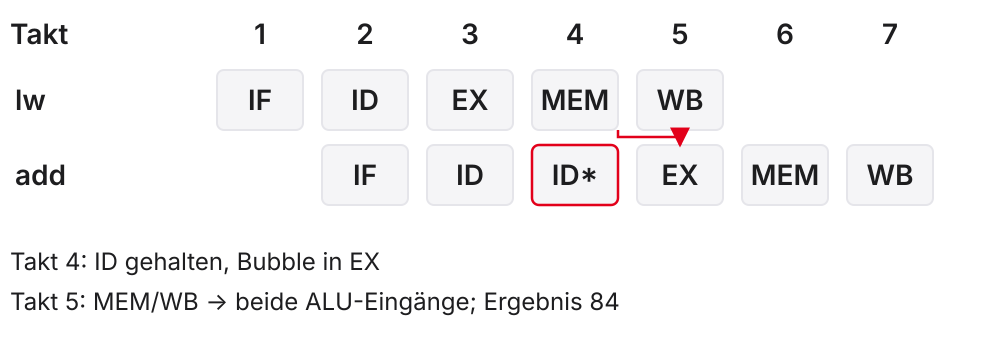

Mikrocomputertechnik 1
Einheit 9: C, Assembler und Abschlussprojekt
C, Assembler und Abschlussprojekt
Ziele der abschließenden Einheit
- Dateien und Aufgaben der Werkzeugkette unterscheiden
- C-Bedingungen und Schleifen nachvollziehbar übersetzen
- Werte über normale Funktionsaufrufe korrekt erhalten
- Ereignis und Zustandsübergang getrennt entwerfen
- Ergebnisse durch Traces und Grenzfälle prüfen
Bekanntes Wissen gezielt verbinden
| Einheit | Heute benötigt |
|---|---|
| 1–3: Werte, Befehle und Speicher | Masken, Vergleiche und Arrayadressen |
| 4: Funktionen und Stack | Argumente, Rückkehrlink und Sicherung |
| 5–7: Datenpfad und Pipeline | Befehlswirkung und Zeitmodell unterscheiden |
| 8: Geräte und Dienste | Registerkarte, Eingabesemantik und Ausgabe |
Gemeinsame Annahmen
- RV32I, keine komprimierten Instruktionen in den Kernbeispielen
- ILP32:
intund Zeiger je 32 Bit, Arrayelement hier vier Byte - Skalare Argumente und Ergebnisse nach dem bekannten Funktionsvertrag
- Arrayzugriffe gültig; betrachtete vorzeichenbehaftete C-Rechnungen ohne Überlauf
- Lehrübersetzung, Simulatorbeobachtung und Compilerausgabe getrennt
1. Von C zu einem Programm für das Ziel
Werkzeugkette und Zwischenergebnisse

Den Treiber gezielt anhalten
| Option | Ergebnis des betrachteten Aufrufs |
|---|---|
-E |
Vorverarbeiteter Text |
-S |
Assemblertext |
-c |
Objektdatei, noch nicht gelinkt |
| Ohne diese Stoppoptionen | Linkschritt, falls Eingaben und Zielumgebung passen |
Compileroptionen sind kein Beweis für eine bereits erfolgreiche Ausführung.
Host und Ziel ausdrücklich wählen
Aufrufschema bei vorhandener passender RISC-V-Toolchain:
Ein gewöhnliches gcc auf dem Arbeitsrechner wählt dessen eigenes Ziel.
Deklaration, Implementierung und offenes Symbol
- Ein Header kann eine Funktion deklarieren
- Die Implementierung kann in einem anderen Objekt liegen
- Der Assembler kennt nicht jede endgültige Zieladresse
- Relocation beschreibt noch anzupassende Stellen
- Der Linker verbindet kompatible Teile
Optimierung erhält Verhalten, keine feste Schablone
Vorhandene C-Funktion:
Das Ergebnis ist 15; eigene Register für a und b sind nicht vorgeschrieben.
2. Kontrollfluss und Adressrechnung übersetzen
C lesen: Ein kleiner Sprachschlüssel
int: hier vorzeichenbehafteter 32-Bit-Ganzzahltyp=weist zu,==prüft Gleichheit{ ... }fasst Anweisungen zu einem Block zusammenreturnliefert das Ergebnis und beendet die Funktionp[i]liest das Arrayelement mit Indexi
Gleichheit: genau einen Zweig ausführen
a == b liefert 1, sonst 2.
Gleichheit als Branch und gemeinsames Ende
Ohne den Sprung zum Ende würde auch der Else-Zweig erreicht.
Kontrollfluss als gerichteter Graph

while: Prüfung vor jedem Durchlauf
Start 0: zehn Körperausführungen und elf Prüfungen.
while: Die Abbruchbedingung invertieren
signed und unsigned sind unterschiedliche Vergleiche
Das Bitmuster 0xFFFFFFFF:
| Betrachtung | Wert | Vergleich mit 10 |
|---|---|---|
| Vorzeichenbehaftet | \(-1\) | kleiner |
| Vorzeichenlos | \(4294967295\) | größer |
bge und bgeu prüfen unterschiedliche Ordnungen.
for: Vier Phasen auseinanderhalten

Summe von null bis vier
\[0+1+2+3+4=10\]
Arrayindex wird zum Byteoffset

\[A_i=B+4i,\qquad 0\leq i<n\]
Arraysumme in C: Grenze vor dem Lesen
Vorhandene Funktion aus beispiele/vl9_control.c:
Der Körper einer Arraysumme
Lehrrollen: t0 Basis, t1 Index, t2 Summe.
Länge vorher prüfen; der Shift allein verhindert keinen Zugriff außerhalb.
Grenze, Null-Länge und C-Gültigkeit
Für sum_array(p, n):
n = 0: kein Zugriff, Ergebnis null- Fünf gültige Werte 10, 20, 30, 40, 50: Ergebnis 150
- Index immer kleiner als die vorhandene Länge
- Jede betrachtete vorzeichenbehaftete Zwischenaddition muss definiert sein
Kurzaufgabe: Den ersten Fehler suchen
Lehrfragment eines If-Else mit Ergebnis in a0:
Welcher Test zeigt den Fehler, und welche Kante fehlt?
3. Funktionen und Aufrufkonvention
Blattfunktion: Kein Aufruf, kein Frame nötig
C-Lehrbeispiel: int calc(int a) { return a * 2; }
Manuell für gültige C-Eingaben übersetzt:
Beispiel: a = -3 → Ergebnis -6
Ein weiterer Aufruf verändert ra
Lehrfunktion double_plus_one(a) = calc(a) + 1:
calc ist die Blattfunktion der vorherigen Folie.
Stackframe als Adressrechnung

Vier Byte für ra, insgesamt 16 Byte reserviert.
Welche Werte überleben einen Aufruf?
| Registergruppe | Verantwortung bei einem normalen Funktionsaufruf |
|---|---|
a0–a7, t0–t6 |
Aufrufer sichert noch benötigte Werte |
s0–s11 |
Aufgerufene Funktion erhält eingehende Werte |
ra |
Verschachtelter Aufruf überschreibt Rücksprungadresse |
sp |
Bei Rückkehr wiederherstellen, Ausrichtung beachten |
Beispiel: Ein Zähler in t0 ist nach call calc nicht zugesichert.
Funktion, Programmeinstieg und Dauerbetrieb
retbenötigt eine gültige Rücksprungadresse- Ein Programmeinstieg braucht eine passende Laufzeitumgebung
- Ein Systemdienst über
ecallfolgt der jeweiligen Umgebung - Das Code-Schloss läuft dauerhaft in seiner Hauptschleife
4. Abschlussprojekt: Code-Schloss
Vier Zustände und eine klare Bedienregel
| Zustand | Anzeige | Fortschritt |
|---|---|---|
| S0 | Rot | Geschlossen, erwartet UP |
| S1 | Gelb | UP erkannt, erwartet DOWN |
| S2 | Blau | UP und DOWN erkannt, erwartet RIGHT |
| S3 | Grün | Offen, bleibt bis LEFT offen |
LEFT setzt jeden Zustand auf S0 zurück.
Falsche einzelne Codetaste in S0–S2 → S0.
Zustandsgraph: Erfolgsweg und Rücksetzen

Die vollständige Tabelle ergänzt die übrigen Fälle.
Vollständige Übergangstabelle
Ereignisse: 0 keines, 1 UP, 2 DOWN, 3 RIGHT, 4 RESET durch LEFT.
| Aktueller Zustand | 0 | 1 | 2 | 3 | 4 |
|---|---|---|---|---|---|
| S0 | S0 | S1 | S0 | S0 | S0 |
| S1 | S1 | S0 | S2 | S0 | S0 |
| S2 | S2 | S0 | S0 | S3 | S0 |
| S3 | S3 | S3 | S3 | S3 | S0 |
Ungültiger Zustandswert → S0, auch ohne Ereignis.
Rohwerte einmal pro Abfrage lesen
D-Pad-Register relativ zur exportierten Basisadresse:
| Taste | Wortoffset | Bit in unserer Rohmaske |
|---|---|---|
| UP | 0 Byte | 1 |
| DOWN | 4 Byte | 2 |
| LEFT | 8 Byte | 4 |
| RIGHT | 12 Byte | 8 |
Alle vier Register jeweils einmal lesen und daraus eine Maske bilden.
Rohmaske ist noch kein Ereignis

Mehrere gesetzte Bits: kein Ereignis, aber Gruppe verbraucht.
Beispieltrace: Drücken und Loslassen

Jede Spalte ist eine Abfragegruppe, keine feste Zeitdauer.
Reine Übergangsfunktion
beispiele/vl9_next_state.s
- Eingabe:
a0Zustand,a1Ereignis - Ausgabe:
a0Folgezustand - Keine Gerätezugriffe, keine Ausgabe, kein Stackframe
- Ungültigen Zustand zuerst erkennen
Fragment des Anfangs:
Vollständiges Ripes-Lehrprogramm
beispiele/vl9_code_lock.s enthält:
- Dauernde Hauptschleife und Freigabemerker
read_sample: vier Gerätewerte → Rohmaskenext_state: Zustand und Ereignis → Folgezustandstate_colour: Zustand → RGB-Wort
Geräte: ein D-Pad und eine LED-Matrix, erstes Pixel.
Zustandsberechnung muss gespeichert werden
Teil der Hauptschleife:
Auch bei Ereignis 0 wird next_state aufgerufen.
Tests aus der Spezifikation ableiten
| Test | Erwartung |
|---|---|
| UP, DOWN, RIGHT mit Freigabe dazwischen | S0 → S1 → S2 → S3 |
| UP halten | Nur erster gültiger Druck zählt |
| Mehrfachdruck, dann nur eine Taste gehalten | Kein neues Ereignis |
| S1 und neuer UP-Druck | S0 |
| S3 und neuer DOWN-Druck | S3 |
| LEFT in jedem Zustand | S0 |
| Zustandswert 99, kein Ereignis | S0 wird gespeichert |
5. Rückblick: Eine Anweisung durch alle Ebenen
Hauptsteuerung des bekannten Teilmodells
| Signal | lw |
sw |
beq |
add/sub/and/or |
|---|---|---|---|---|
| RegWrite | 1 | 0 | 0 | 1 |
| ALUSrc | 1 | 1 | 0 | 0 |
| MemRead | 1 | 0 | 0 | 0 |
| MemWrite | 0 | 1 | 0 | 0 |
| MemtoReg | 1 | X | X | 0 |
| Branch | 0 | 0 | 1 | 0 |
| ALUOp | 00 | 00 | 01 | 10 |
X: Wert ohne Einfluss auf das Ergebnis in diesem Fall.
Load-Use: Wert ist erst nach MEM verfügbar

Lehrmodell mit Forwarding: ein Stall, insgesamt sieben Takte.
Fehleranalyse: Die erste Abweichung eingrenzen
Bei einer falschen Anzeige prüfen Sie der Reihe nach:
- Stimmen Basisadresse, Offset und gelesene Rohmaske?
- Entsteht das passende einzelne Ereignis?
- Liefert die Übergangstabelle den erwarteten Zustand?
- Wird das Ergebnis in
s0gespeichert? - Passt das Farbwort zum Zustand und LED-Gerät?
Transferaufgaben für Papier und Simulator
- C-Bedingung in passende Vergleichsrichtung übersetzen
- Arrayadresse und Schleifenanzahl begründen
- Stackadresse und Registerverantwortung berechnen
- Eingabetrace mit Übergangstabelle vervollständigen
- Einen Load-Use-Stall im bekannten Modell einzeichnen
Übungsblatt 9 enthält Aufgaben und getrennte Musterlösungen.
Das sollten Sie jetzt erklären können
- Welche Datei erzeugt jede Stufe der Werkzeugkette?
- Warum braucht
a == beine passende Abzweigung? - Wann benötigt eine Funktion einen Stackframe?
- Warum sind Rohmaske und Ereignis verschieden?
- Wie verbindet eine Speicheranweisung Software und Datenpfad?